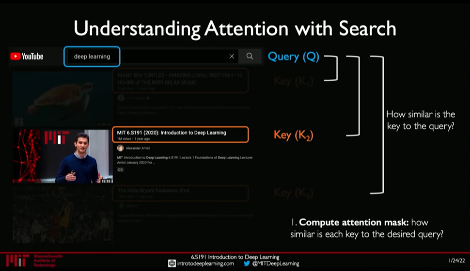
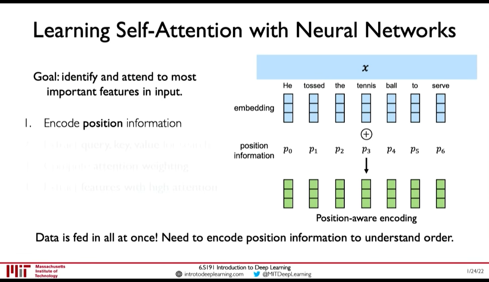
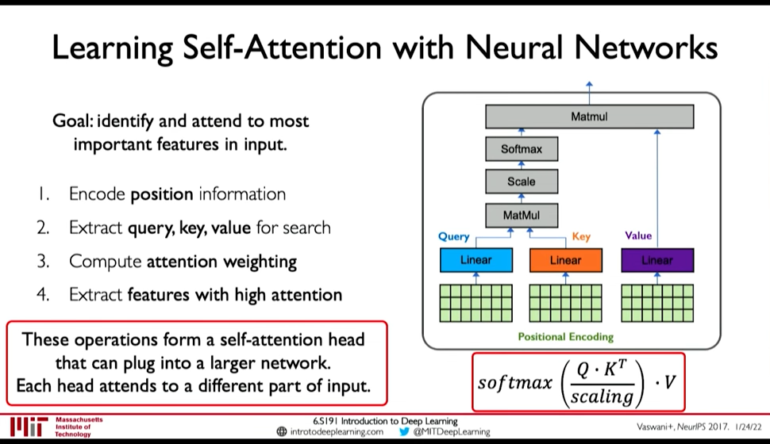

Transformer Architecture
Table of Contents
See RNN and Transformers (MIT 6.S191 2022) for link to video lecture.
Transformer architecture
- Identify parts to attend to
- and Extract features with high attention
Attention has been used in:
- AlphaFold2: Uses Self-Attention
- BERT, GPT-3
- Vision Transformers in Computer Vision
1. Idenitfying parts to attend to is similar to Search problem
- Enter a Query (\(Q\)) for search
- Extract key information \(K_i\) for each search result
- Compute how similar is the key to the query: Attention Mask
- Extract required information from the search i.e. Value \(V\)

Figure 1: Attention as Search
2. Self-Attention in Sequence Modelling
Goal: Identify and attend to most important features in input
We want to elimintate recurrence because that what gave rise to the limitations. So, we need to encode position information

Figure 2: Position-Aware Encoding (@ 0:48:32)
- Extract, query, key, value for search
- Multiply the positional encoding with three matrices to get query, key and value encoding for each word
- Compute attention weighting (A matix of post-softmax attention scores)
Compute pairwise similarity between each query and key => Dot Product (0:51:01)
Attention Score = \(\frac {Q . K^T} {scaling}\)
- Apply softmax to the attention score to get value in \([0, 1]\)
- Extract features with high attention: Multiply attention weighting with Value.

Figure 3: Self-Attention Head